HomeDeck is a smart-home deck for my room: a carrier PCB for the Raspberry Pi Compute Module 4 that bolts to the back of the 7-inch Raspberry Pi Touch Display 2, with CO2 and VOC sensors, stereo speakers, two microphones, a camera and a light bar, plus the software that turns it into a voice assistant called Jarvis. I started it to learn PCB design properly, from schematic to a board assembled by a fab, and to practise product design: integrating the board, the enclosure and the software into one thing that works as a device. The first revision is on my desk and in daily use. The KiCad project, tools, enclosure CAD and assistant software are in the GitHub repository.
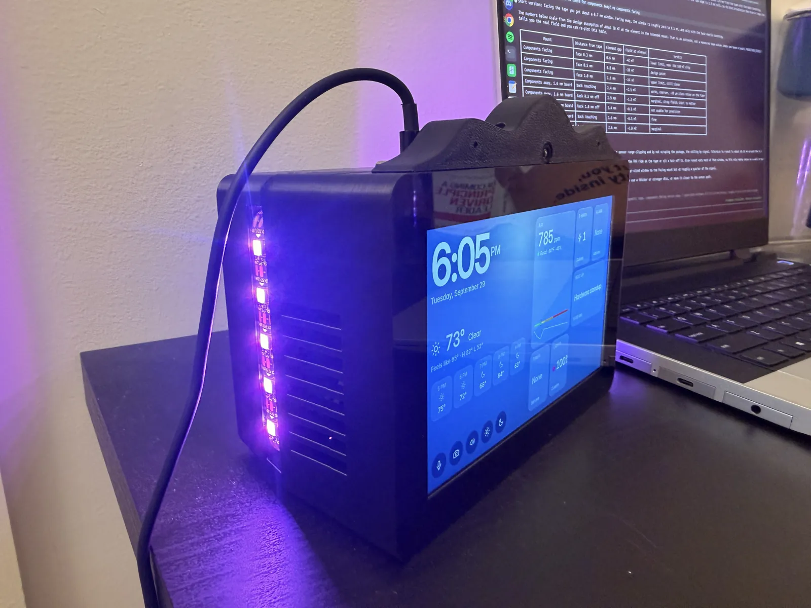
Overview
It does what an Echo Show does, except I know everything that runs on it. The home screen shows the time, the weather, the CO2 reading, the next calendar event, e-bikes at the nearest Bay Wheels station and what is playing. "Hey Jarvis" starts a conversation: timers, alarms, lights, music, volume and maths are matched as commands on the device without a language model; everything else goes to a hosted model. A phone app behind Google sign-in gives the same controls from anywhere, plus the camera, an intercom and presence.
Hardware
- Board: 130 x 105 mm, 4 layers, USB-C Power Delivery in (CH224K), three TPS5430 bucks, an AMS1117 3.3 V regulator.
- Compute: CM4 with Wi-Fi, 4 GB RAM and 16 GB eMMC on two Hirose DF40C sockets, flashed over USB-C with an nRPIBOOT jumper and two USB muxes.
- Display, camera, sensors: Touch Display 2 (7-inch, 720 x 1280) over DSI, Camera Module 3 over CSI, SCD40 (CO2) and BME688 (temperature, humidity, pressure, VOC) on a slotted tongue, a header for a BH1750 light sensor or an SHT4x.
- Audio and the rest: PCM5102A I2S DAC and TPA3118D2 class-D amplifier, two ICS-43434 MEMS microphones, a CH334R USB hub with USB-A and a second USB-C, ten WS2812B LEDs plus a strip header, fan, buttons, UART and expansion headers, microSD.
Software
- One Python service on the CM4 with a module per feature: voice, timers, alarms, calendar, Spotify, YouTube, sensors, weather, bikes, transit, lights, camera, presence, intercom, guest mode and more.
- A touch UI in Chromium kiosk mode with an app switcher and my own on-screen keyboard, and a phone app behind Google sign-in with secrets redacted from every API response.
- Voice: openWakeWord locally, Groq Whisper for speech to text, Groq chat with a web search fallback, Orpheus text to speech with Piper offline.
Design
The board is a KiCad 7 project I drew by hand: a hierarchical schematic of nine sheets (power, CM4, USB, video, SD, audio, sensors, UI, mechanical) and a four-layer layout, learned from the CM4 design guide and the datasheet of every part. The schematic is label style, a global label on every pin, so clicking any label shows every place that net goes. Placement is mine too, each passive next to its chip. The routing and the fab exports went through a handful of scripts, described below.
The stack-up is signal, ground, power, signal, the power layer split into planes per rail: 5V_SYS under the CM4, the 15 V input along the right edge, 5V_USB bottom left, 5V_PERIPH along the top and 3.3 V under the sensor tongue. Rules are 0.2 mm tracks and 0.15 mm clearance, down to 0.1 mm in the two CM4 fan-out areas, where every used pad gets a short stub to a small via in three staggered rows; the 0.4 mm pitch sockets are why the board is ENIG. The DSI, CSI and USB pairs are matched within 1.3 mm except the second USB-C port's data pair at 7.7 mm, which the receptacle's interleaved pads made impossible to tune automatically. That is about 2.5 percent of a USB high-speed bit, so it works, but it is the first thing I would tidy by hand.
The mechanical decision that shaped the layout: the board mounts on the display's own four M2.5 standoffs, on the 58 x 49 mm Raspberry Pi hole pattern, bottom side toward the panel. So the bottom carries only flat passives, two small transistors and the microphones; everything tall is on top. External connectors are on the bottom edge, the FPC connectors above the CM4 with the ribbons exiting toward the top, the sensors on a tongue at the left edge with two routed slots for thermal isolation, the microphones at the top corners. The first mounting was portrait; the device ended up in landscape for a thermal reason covered below.


Bill of materials
| Part | What it does | Qty |
|---|---|---|
| Raspberry Pi CM4 (Wi-Fi, 4 GB, 16 GB eMMC) | The computer: runs Raspberry Pi OS and the assistant. | 1 |
| Hirose DF40C-100DS-0.4V sockets | The two 100-pin, 0.4 mm pitch sockets the CM4 plugs into. | 2 |
| Raspberry Pi Touch Display 2 | 7-inch 720 x 1280 touchscreen over DSI. | 1 |
| Raspberry Pi Camera Module 3 | Camera over CSI, for the phone app and motion clips. | 1 |
| CH224K | USB-C Power Delivery sink: asks the charger for 9 V (15 V by jumper). | 1 |
| TPS5430 buck converters | 3 A bucks for the 5V_SYS, 5V_PERIPH and 5V_USB rails. | 3 |
| AMS1117-3.3 | 3.3 V LDO for the sensors, hub and logic. | 1 |
| CH334R | USB 2.0 hub feeding the USB-A port, the second USB-C and two internal headers. | 1 |
| SCD40 | CO2 sensor on the slotted tongue. | 1 |
| BME688 | Temperature, humidity, pressure and VOC sensor. | 1 |
| SHT4x and BH1750 (J12 header) | Temperature and humidity on a lead away from the CM4; light sensor behind the bezel. | 1 each |
| PCM5102A | I2S stereo DAC. | 1 |
| TPA3118D2 | Stereo class-D amplifier, more than 5 W per channel into 8 ohm. | 1 |
| ICS-43434 | I2S MEMS microphones, bottom-ported through holes in the board. | 2 |
| WS2812B | Addressable LEDs: ten on the board's top edge, seventy on the external strip. | 10 + 70 |
| Speakers, 8 ohm | Two small full-range drivers on JST-PH leads, mounted in the back cover. | 2 |
| Fan, 30 mm, 5 V | Pulls air over the CM4 heatsink and out the top of the case. | 1 |
| USB-A and USB-C receptacles | One USB-A on the hub; two USB-C, one for power and one for data and flashing. | 1 + 2 |
| Tactile switches | Power, reset and two user buttons. | 4 |
| Passives | 94 capacitors, 46 resistors and 7 inductors, mostly 0603 on the bottom side. | 147 |
Full JLCPCB BOM and placement files are in the repository. Download the BOM (CSV).
The tools I built
KiCad has no autorouter, only its interactive push-and-shove router, and I did not want to hand-route 160
nets under a 0.4 mm pitch connector and redo them after every placement change. I also wanted rules KiCad
does not know: the fan-out areas, power nets that drop to the inner planes instead of being routed, and a
reserved exit direction for every fine pad. So I wrote about five scripts for the repetitive parts.
route.py exports the board as JSON (pad polygons, plane outlines, per-net widths and
clearances, the fourteen differential pairs, the escape strips) and hands it to router.cpp, a
negotiated-congestion grid router in the PathFinder style. It is C++ because the grid is 0.1 mm over the
whole board on two signal layers, about 1.4 million cells per layer. Each net is routed with A* against
hard obstacles (pads, keepouts) and soft ones (other nets' copper, which only costs a penalty); nets that
overlap are ripped up and rerouted with a history cost on the contested cells until the conflicts are
gone. Power nets end in vias to their plane and each leg of a differential pair is pulled toward its
partner. Back in Python the tracks are imported, the zones filled and KiCad's DRC run from the command
line; a pass takes 20 to 40 minutes. The rest is small: a pair tuner, a ground stitcher, a clearance
checker for the hand fixes, and the fab export. Five ground vias, a moved resistor and the second USB-C
pair were placed by hand where the scripts stopped.
| Tool | What it does |
|---|---|
route.py, router.cpp | The autorouter: problem export, the C++ negotiated-congestion router, import, zone fill and DRC until the report is clean. |
tune_pairs.py, skew.py | Length report for the 14 differential pairs, and meander bumps on the shorter leg to within 0.25 mm where there is room. |
gnd_stitch.py, via_grid.py | A via for every patch of ground pour with no path to the plane, then a 5 mm grid of stitching vias over the open pour. |
clearchk.py | Clearance check of tracks and vias against pads and other nets, for the hand fixes. |
export.py | Gerbers and drill files, the JLCPCB BOM and placement file with per-package rotation corrections, the schematic PDF. |
Build
JLCPCB made and assembled the boards: four layers, 1.6 mm, ENIG, two-sided "Standard" assembly because 116 of the 218 parts sit on the bottom. The BOM has 66 lines, 38 JLC Basic and 28 Extended; I picked a Basic part wherever one existed, hence three small TPS5430 bucks instead of one large one. Three parts were out of stock and swapped (the fuse, the FPC connectors and the CM4 sockets; the genuine Hirose sockets had 25 in stock and an 11-day lead). Because JLCPCB's placement preview can rotate parts, I wrote an orientation list for every assembled part with where pin 1, the cathode band or the plus mark has to sit. The tactile switches are the trap: a 90 degree error shorts the button permanently.

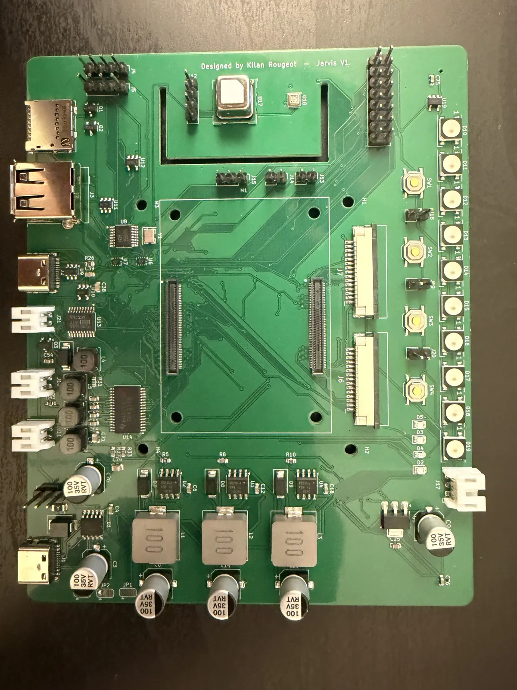
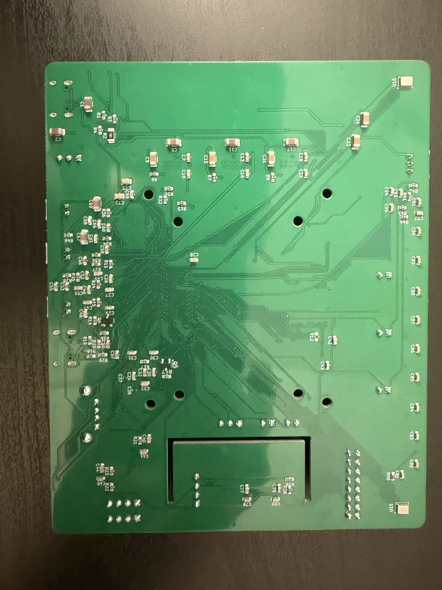
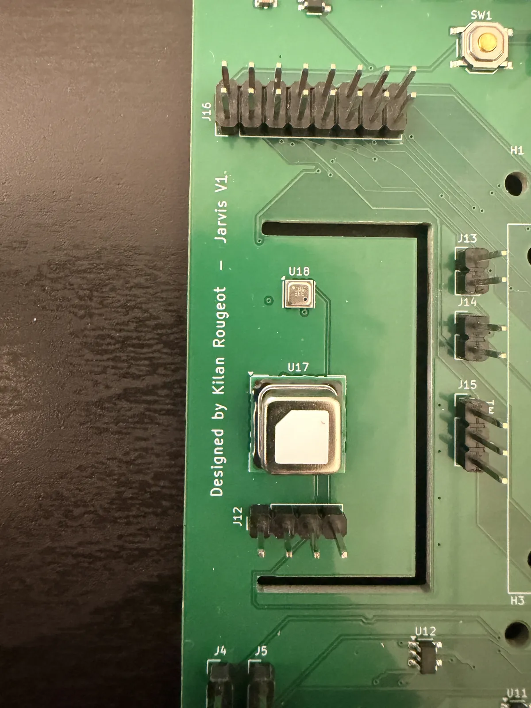
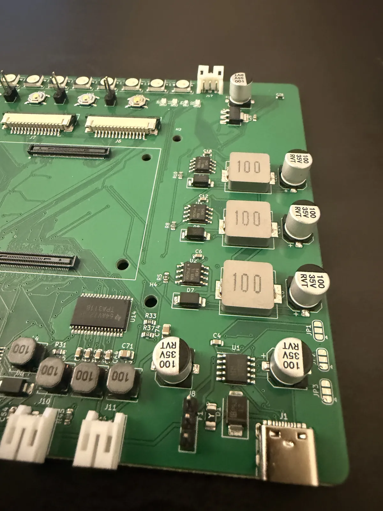
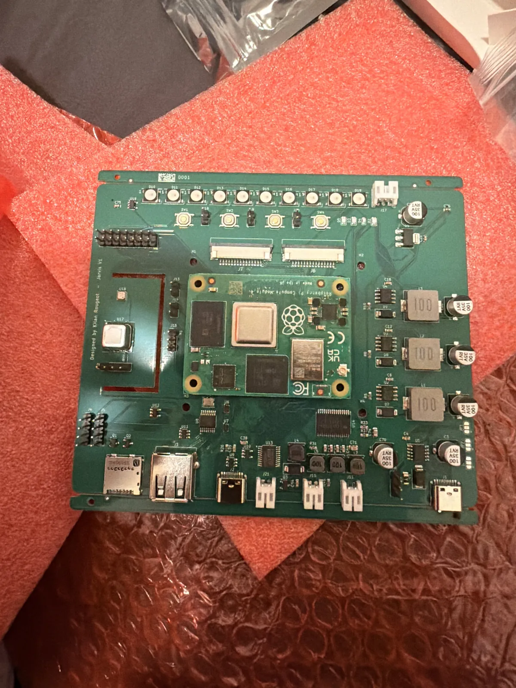
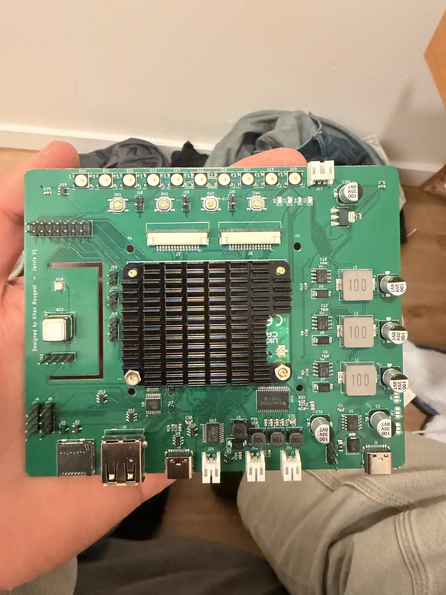
Bring-up followed a checklist: resistance from each rail to ground with no CM4 fitted, then the PD charger alone to check the 15 V input and 5.0 to 5.2 V on the three rails, then the module. The eMMC was flashed through the second USB-C port with the nRPIBOOT jumper, which flips both USB muxes so the CM4 talks directly to a PC. Device-tree overlays covered the DSI panel, I2C6 on GPIO 22 and 23 for the sensors, a power button on GPIO 3 and a custom audio overlay for the DAC and microphones; a serial adapter on the UART header saved time twice. In the case, two more fixes: the CM4 ran too hot, so it got the official heatsink and an SHT4x on the J12 I2C header, on a lead away from the module, now reads the room temperature; and the display ribbon was resting on the pins of the two unused button headers next to the FPC connectors, so I clipped those pins off.
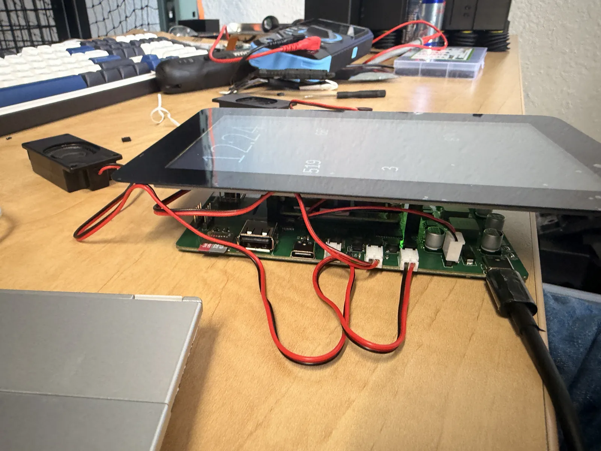
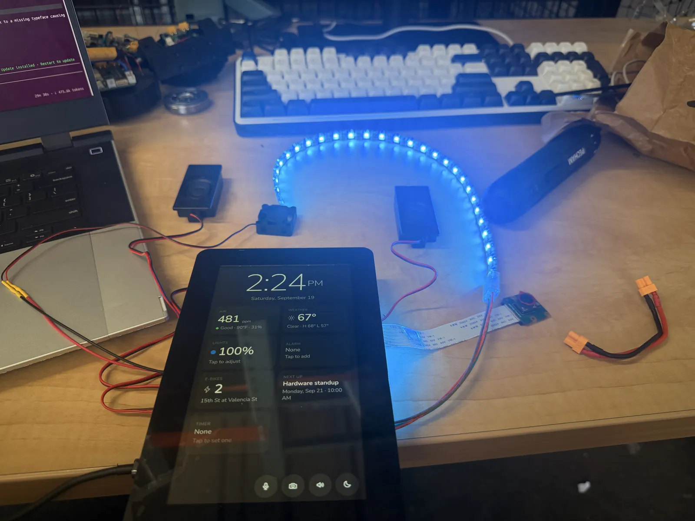
Two rev A boards were assembled. Board #1 works completely after two solder-jumper changes and is in daily use: PD, all three bucks, the CM4 with Wi-Fi and Bluetooth, display and touch, camera, both sensors and the I2C header, microphones, amplifier, LEDs, fan, buttons and USB ports. Board #2 is assembled and not yet powered. What went wrong on rev A and what rev B changes:
| Rev A finding | Workaround on board #1 | Rev B change |
|---|---|---|
| Laptop-class PD chargers negotiate 15 V and trip during the 5 to 15 V step, probably from inrush into about 280 uF of input capacitance. Only 9 V sources worked. | Cut and re-bridged the CH224K configuration jumpers to request 9 V. The amplifier has less headroom, which the small speakers do not need. | Inrush limiting on VBUS, a smaller bulk capacitor, 9 V as the default jumper setting. |
| The 5V_PERIPH rail was dead on first power-up, then came alive on handling: a poor joint on the inductor, which sits over a plane cutout on a wide footprint. | Powered the display from 5V_SYS on the expansion header until the joint reflowed itself. | Easier inductor footprints, test points on every rail, rails routed so a meter probe reaches them. |
| The microSD slot is dead with an eMMC CM4, because eMMC modules disable the SD interface. | Camera clips go to Google Drive instead. | Drop the slot or mark it Lite-only. |
| Button A on GPIO 16 is claimed by the stock voice HAT audio overlay. | A custom overlay with the amplifier shutdown line moved. | Keep buttons off GPIOs that common audio overlays use. |
| Toggling the amplifier shutdown pin per playback pops. | Shutdown held high permanently; mute by silence. | A proper mute with an RC ramp; keep the DAC running between plays. |
| The temperature sensors read 8 to 10 F high in portrait mounting, sitting above the CM4 in its rising warm air. | Mounted in landscape (sensors beside the module) plus a configurable offset. | Sensors on the edge farthest from the CM4, fan placed to pull air away from them. |
| The display sometimes fails to probe at boot; reseating the ribbon fixes it. Swapping the display and camera ribbons broke the display once. | Power cycle with the ribbon reseated. | A locking FPC connector for the display, both connectors labelled with their ribbon lengths. |
| The fan is on or off only; the low-side switch was not meant for 25 kHz PWM and fans stall below about 35 percent. | Auto thresholds in software. | A proper PWM fan stage or a 4-wire fan header. |
| With a plain 5 V charger the CM4 reports under-voltage instead of refusing to boot. | Use a PD charger. | A VBUS-good comparator that holds the CM4 in reset below 8.5 V, and a PD status LED. |
Software
Everything runs as one systemd service on stock Raspberry Pi OS; an install.sh sets up the
service, the kiosk, the audio configuration, Caddy for the phone app, DuckDNS and UPnP. The core,
server.py, handles config, the module loader, an event bus, the HTTP API, the auth gate,
secret redaction and the content security policy. A module is one Python file with a name, defaults, a
state(), an api(), a blocking start() loop and an optional
intent(text) for voice; apps on the screen register with the shell and get render, update, a
home-screen tile and event hooks. Timers, conversation, air and YouTube history survive power loss, and web
files hot-reload in the kiosk when their version changes.
Spotify is a Spotify Connect speaker (go-librespot) plus a Web API client, with on-device sign-in through my on-screen keyboard injected into
Spotify's login pages; YouTube plays through a yt-dlp search and an ffmpeg remux into a native, ad-free
player; the sensors module keeps a one-minute history and gives a spoken air report daily. Chromium shares
the ALSA chain with Jarvis and Spotify so one software volume covers everything, and a watchdog restarts
the browser when its shared-memory leak fills /tmp, never while the screen is being touched.
Echo cancellation was the hard part. The speaker feed is teed into an ALSA loopback card, and a helper built on WebRTC AEC3 reads the microphones and the loopback and feeds cleaned 16 kHz audio to the voice pipeline. The echo reaches the microphones 20 to 40 ms before the loopback copy, so the microphone path is delayed 60 ms. At volume 55 it removes about 16 dB of music echo; if the helper dies twice in a minute the pipeline falls back to plain capture. Later: one wake-word model on the sum of both microphones, a ten-band equaliser with a pink-noise room calibration, and 14 dB of music ducking for the whole voice turn.
Building this board taught me something about microphones in an enclosure: no matter how far out on the PCB you put them, two MEMS mics sitting near a fan and two speakers inside a closed case are hard to hear across a room. The on-board ICS-43434 pair works well within about 2 m; further away, questions often came back as "nothing said", which made Jarvis feel slow. So I added an external USB microphone, a Generalplus SF-558 on a gooseneck in the USB-A port, for talking to it from across the room. The software handles it on its own: the echo-cancellation helper got a second input with its own AEC3 instance on the same loopback reference, the voice module watches /proc/asound/cards and reopens capture when the microphone comes or goes, questions are recorded from it when present and from the on-board pair otherwise, and the wake-word stream mixes both, scaled to the USB microphone's noise floor.
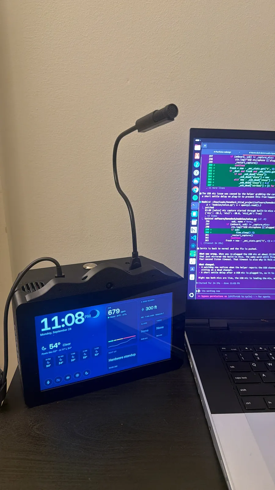


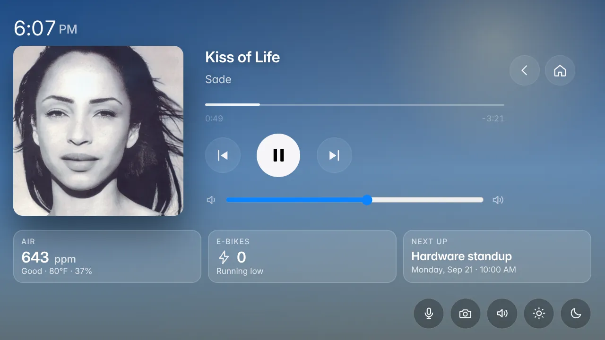
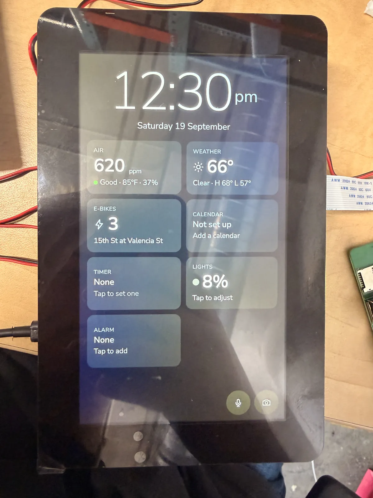
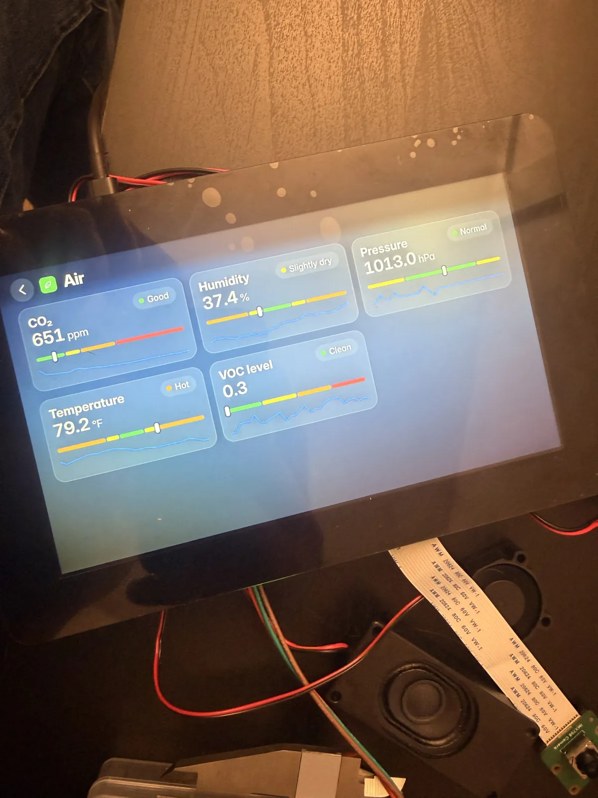


Enclosure
I exported the populated board from KiCad as a STEP model and designed the case around it in Onshape, with the constraints fixed first: the board on the display's four M2.5 standoffs, bottom side toward the panel with 3 to 4 mm standoffs setting the gap, since the bottom only carries parts about a millimetre tall; the CM4, its heatsink and everything tall on the far side; every external connector on one edge. The case is a front part that holds the display behind its bezel and a back cover over the board, in landscape so the sensors sit beside the CM4 rather than above it in its rising warm air.
The board dictated most openings: the case is open at the sensor tongue so the SCD40 and BME688 read the room rather than the inside of the box, the BH1750 sits on a lead behind the bezel where it sees light, the camera sits in the bezel on its ribbon, the microphones listen up through 1 mm holes in the board and matching holes at the top corners of the case, and the speakers, fan and bottom-edge connectors each get an opening. The light is not the on-board LED bar but an external WS2812B strip on the strip header, seventy LEDs in one chain, and the software maps which of them are visible through the case. The fan in the top of the case pulls air out, so room air comes in through the side slots, past the sensor tongue on the opposite side, over the CM4 heatsink and out. The case is printed on a Bambu Lab printer in several pieces at 0.24 mm layers; the 3MF files sit alongside the KiCad project. Renders are next.
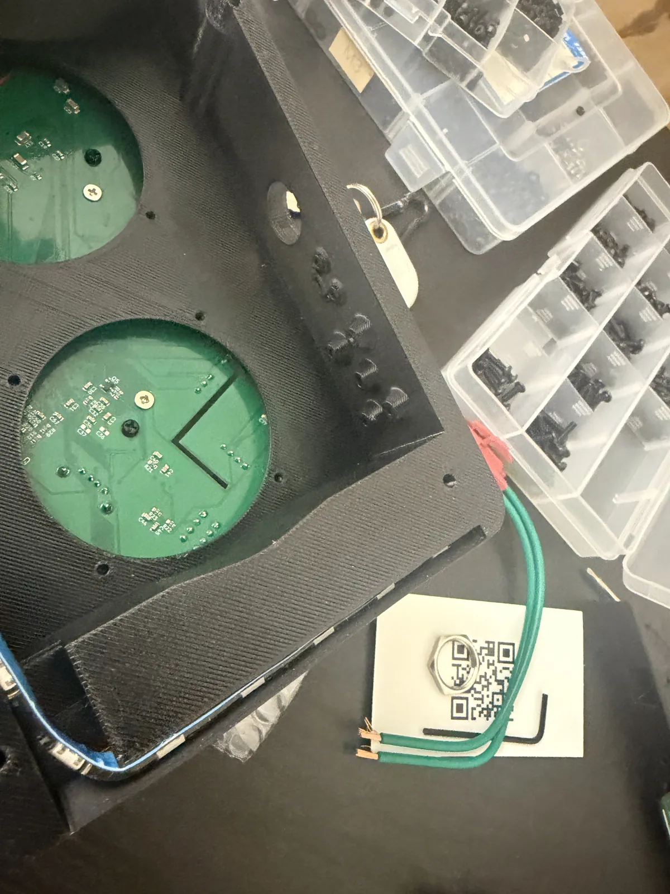
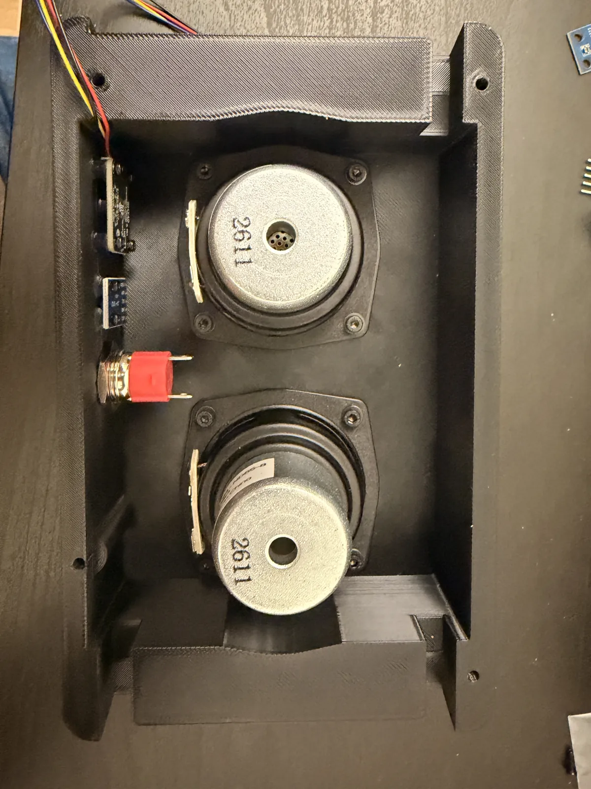
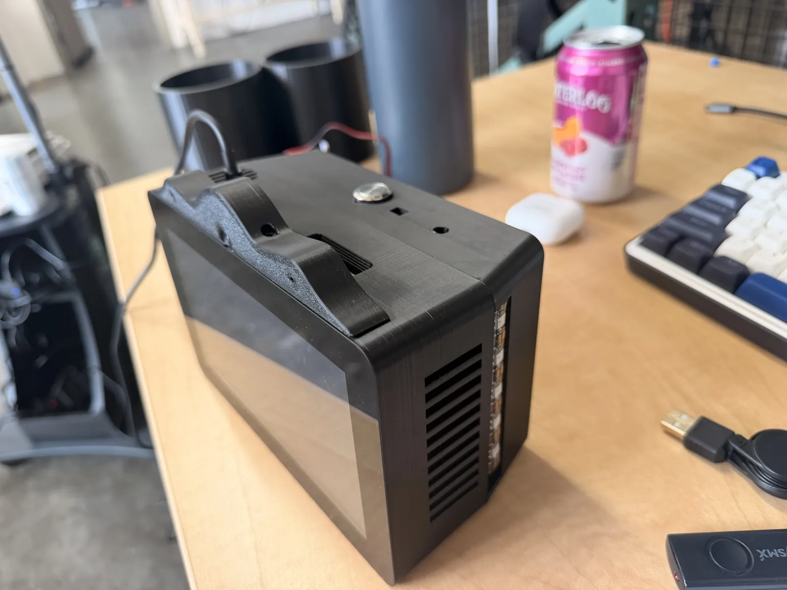
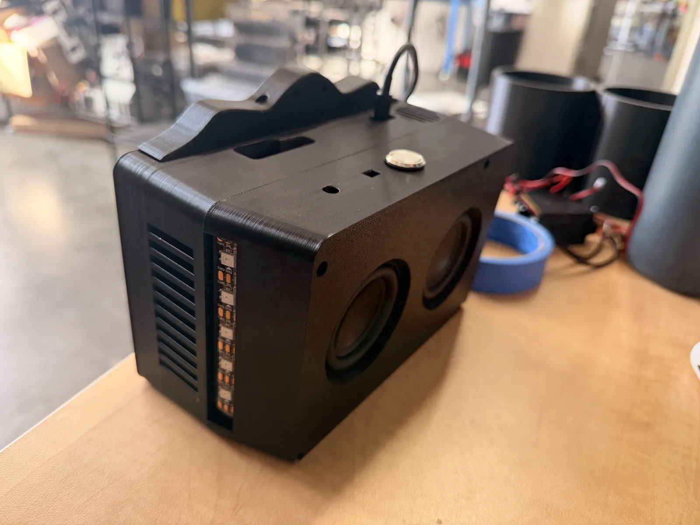
The finished device
The device in use: the home screen, the air-quality history, the apps, and a question to Jarvis (the wait for the answer is sped up 3x).
Lights, Spotify and the app switcher from the touchscreen.
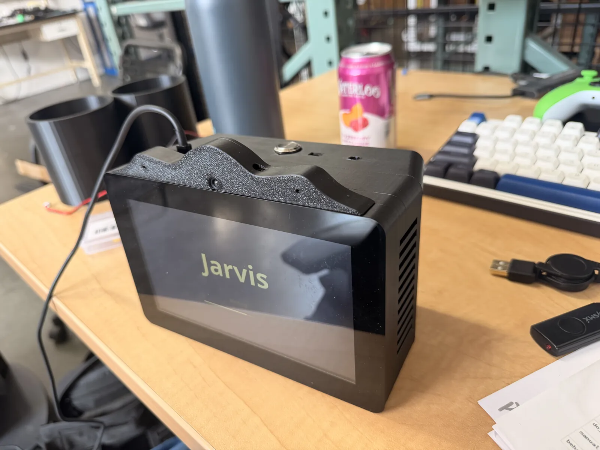
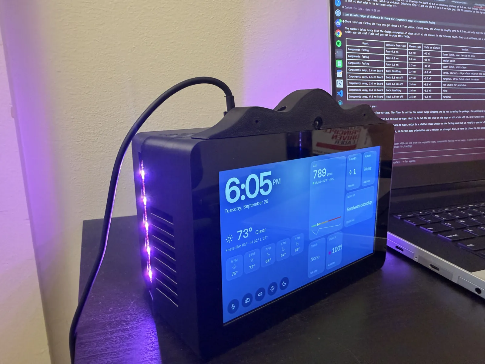
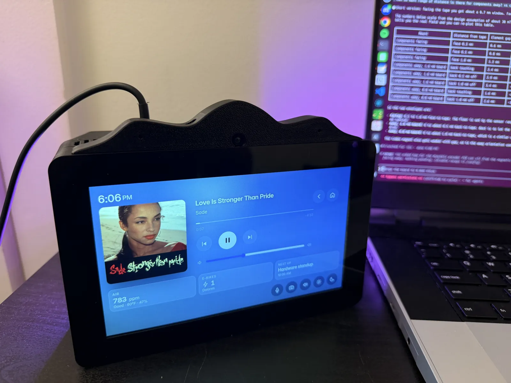
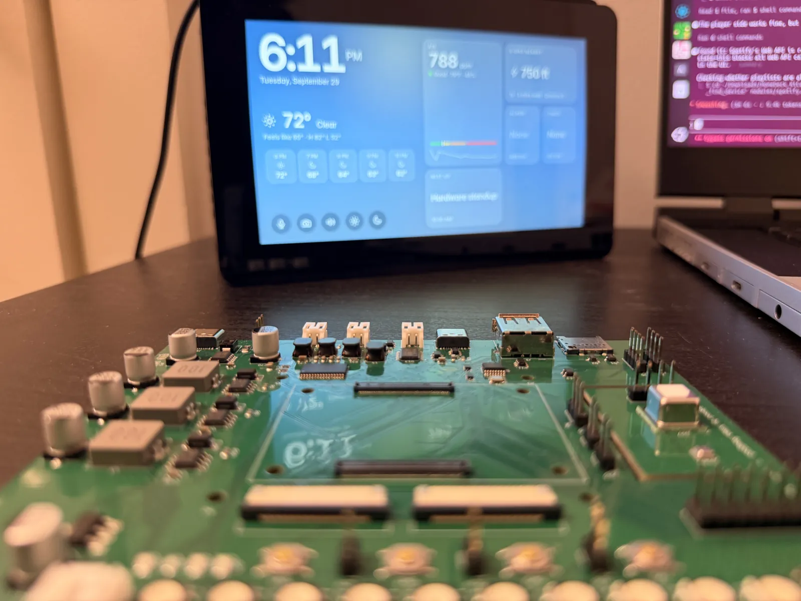
What I learned
PCB design
I went in knowing how to read a schematic and came out having ordered a four-layer board with a 0.4 mm pitch connector on it. Datasheets matter down to the detail: the TPS5430 wants some ESR on its output, the CM4 wants every pull-up referenced to its own 3.3 V so no pin sees voltage while the module is off, the CH334R has its crystal capacitors built in. Power needs more thought than logic: inrush into 280 uF tripped the laptop chargers, a wide inductor footprint over a plane cutout gave me an intermittent rail, and I had no test points to find either. Heat moves: a sensor above the CM4 reads ten degrees high, and in a case the CM4 needs a heatsink and an air path. And the fab's placement preview deserves a part-by-part check, because a rotated tactile switch is a permanently pressed button.
Acoustics
Microphones inside an enclosure have a short reach. However far out on the board they sit, MEMS mics next to a fan and two speakers in a closed case hear well to about 2 m and struggle beyond that. The board-mounted pair is fine for the desk; the gooseneck USB microphone is what makes talking to it from across the room work.
Coding
The software is bigger than the board. A core plus one file per feature, with an event bus and a small module contract, is what let it grow from a bench dashboard to a full assistant. I learned a lot of Linux audio the hard way: ALSA chains, dmix and softvol, loopback cards, why Chromium and PipeWire fight over a sound card, and that an empty state file for the equaliser plugin crashes every ALSA client. Measuring beat guessing: the echo canceller only worked once I measured the delay between microphones and reference, and the second wake-word model only got dropped once I measured that one instance costs half a CM4 core.
Working with AI
I used Claude's latest model at the time, Fable 5.1, to help with the build: from writing the autorouter and the other PCB scripts, to most of the code the device runs on, to custom pieces like the echo-cancellation helper that subtracts the speaker output so the microphones can still hear me while music plays. I was learning KiCad and PCB design from zero, and it was the resource I leaned on to explain datasheets I had never opened, to review the design against them before I ordered, and to work through the PD inrush and the audio chain on the bench. What it could not do was hold the board, reseat a ribbon, notice the rail that came alive when I picked the board up, model the case, or decide what the device should be. The design, the bench work, the CAD, the mistakes in the rev A table and the fixes are mine. I know the circuit well enough now to explain every block on it, which was the point.
Product design
The board was the reason I started, but most of the time went into making the pieces work together: fitting the board behind the display and inside a case that also has to hold two speakers, a fan and a camera; routing air past the sensors; deciding what the device does, what the screen shows and what a voice command should do; and finding out on the bench which of those decisions were wrong. Integrating hardware, software and the enclosure into one thing that sits on a shelf and just works is a different skill from designing any one of them.
Skills used
- Product design: integrating a board, an enclosure, a display and software into one device, and iterating on it from real use.
- PCB design in KiCad 7: four-layer stack-up with split power planes, fan-out under a 0.4 mm pitch connector, DSI, CSI and USB 2.0 pairs, a power tree from USB-C PD through three bucks and an LDO.
- Embedded Linux on the CM4: Raspberry Pi OS, device-tree overlays, ALSA, systemd, a Chromium kiosk.
- Python and C++ tooling on KiCad's pcbnew API: the grid router, the pair tuner, the ground stitching, the fab export.
- CAD in Onshape and 3D printing on Bambu Lab printers.
- Bring-up and bench debugging: rail checks, a serial console, and turning what the boards did into the rev B list.
- Fab and assembly ordering: JLCPCB BOM and placement files, part selection against stock and the Basic and Extended libraries, orientation checks in the placement preview.
What I would do differently
- Not ask for 15 V: the amplifier is the only consumer and the speakers do not need it. Rev B defaults to 9 V with inrush limiting.
- Test points on every rail where a probe reaches, and inductor footprints that are easy to solder and inspect.
- Drop the microSD slot; with an eMMC module it can never work.
- Sensors as far from the CM4 as the board allows, with the fan pulling air away from them.
- Plan for a far-field microphone from the start: a mic array in the front bezel, away from the fan and speakers, instead of relying on the on-board pair.
- Check every GPIO against the audio overlays I plan to use.
- The amplifier's mute pin with a ramp instead of its shutdown pin, and the DAC kept running between plays.
- A locking FPC connector for the display, a real PWM fan stage, and a comparator that holds the CM4 in reset until the PD contract is good.
- Skip the second wake-word instance: summing both microphones into one model scores as well at half the CPU.
- Hand-route the second USB-C port's data pair; 7.7 mm of skew should not ship in rev B.
- Keep headers out of the ribbon path, or use right-angle or low-profile headers.
- Bring the power cable in on the side of the enclosure rather than the top.